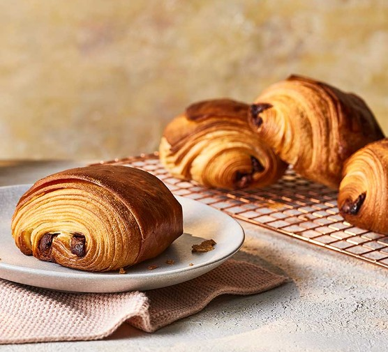

Pain au Chocolat, also known as Chocolate Croissant, is a delectable French pastry consisting of a rectangle of buttery, flaky croissant dough wrapped around one or two pieces of dark chocolate. This beloved breakfast treat is a staple in French bakeries and cafés, offering the perfect balance of crisp, buttery layers and rich, melting chocolate.
Ingredients
- 500g all-purpose flour
- 10g salt
- 55g granulated sugar
- 10g instant yeast
- 300ml cold water
- 250g cold unsalted butter (for lamination)
- 200g high-quality dark chocolate, cut into batons
- 1 egg, beaten (for egg wash)
- Powdered sugar for dusting (optional)
Preparation
Making Pain au Chocolat is a labor of love that requires patience and precision. The process involves creating a laminated dough by folding butter into the dough multiple times to create dozens of alternating layers of butter and dough. When baked, these layers create the signature flaky, honeycomb-like texture that makes this pastry so special.
Chef's Tips
- Keep all ingredients cold throughout the process to prevent the butter from melting into the dough.
- Allow sufficient resting time between folds to relax the gluten and make rolling easier.
- Use high-quality chocolate that will melt beautifully but still hold its shape.
- For the best rise, proof the pastries until they're visibly puffy before baking.